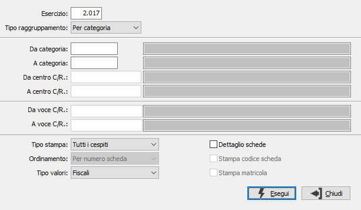

Stampa riepilogo cespiti
Il programma fornisce un elenco sintetico o analitico dei cespiti suddivisi per categoria fiscale, indicando il valore originario aggiornato, il valore ammortizzato (corrispondente alla consistenza dei fondi prima degli ammortamenti), il valore degli ammortamenti dell'esercizio (corrispondente all'importo delle quote di ammortamento dell'esercizio). Il prospetto serve per effettuare un controllo incrociato con la contabilità.

ESERCIZIO: indicare l'esercizio a cui si riferiscono gli ammortamenti per i cespiti da riepilogare. Viene automaticamente proposto l'esercizio corrente, modificabile. Non è consentita la conferma a vuoto.
TIPO RAGGRUPPAMENTO: indica il modello di raggruppamento. Valori possibili: Per categoria fiscale; Per centro di costo/ricavo. (Valido solo per gli utenti di OS1 Enterprise).
DA CATEGORIA: indicare il codice della categoria fiscale dal quale si desidera iniziare l’elaborazione. Sul campo sono attive le funzioni di ricerca (F9).
A CATEGORIA: indicare il codice della categoria fiscale alla quale si desidera terminare la stampa. Sul campo sono attive le funzioni di ricerca (F9).
DA CENTRO C/R.: indicare il codice del centro di costo/ricavo dal quale si desidera iniziare l’elaborazione. Sul campo sono attive le funzioni di ricerca (F9).
A CENTRO C/R.: indicare il codice del centro di costo/ricavo al quale si desidera terminare la stampa. Sul campo sono attive le funzioni di ricerca (F9).
DA VOCE C/R.: indicare il codice della voce di costo/ricavo dal quale si desidera iniziare l’elaborazione. Sul campo sono attive le funzioni di ricerca (F9).
A VOCE C/R.: indicare il codice della voce di costo/ricavo al quale si desidera terminare la stampa. Sul campo sono attive le funzioni di ricerca (F9).
TIPO STAMPA: definisce lo stato dei cespiti da selezionare. Valori ammessi: Tutti i cespiti; Esclude i cespiti dimessi; Solo i cespiti dimessi.
ORDINAMENTO: determina il criterio per l'ordinamento della stampa. Valori ammessi: Per numero scheda; Per descrizione scheda; Per codice scheda.
TIPO VALORI: il campo è presente solo se attiva la gestione degli ammortamenti fiscali e definisce se stampare i valori fiscali o civilistici.
DETTAGLIO SCHEDE: definisce se effettuare la stampa del dettaglio delle schede cespiti (casella con segno di spunta).
STAMPA CODICE SCHEDA: definisce se deve essere stampato il codice del cespite (casella con segno di spunta).
STAMPA MATRICOLA: definisce se deve essere stampata la matricola del cespite (casella con segno di spunta).